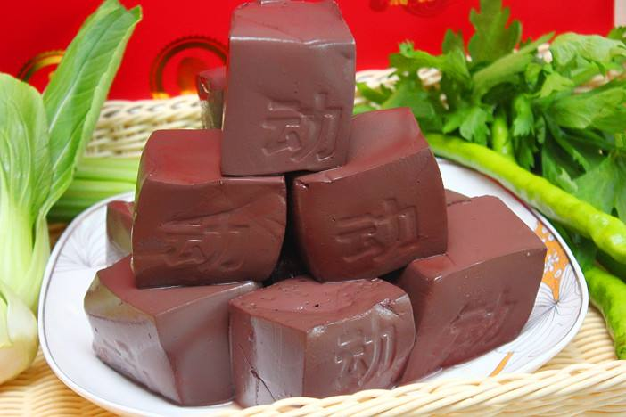

猪血
猪血(猪红)：又称液体肉、 血豆腐和血花等，味甘、苦，性温， 有解毒清肠、补血美容的功效。


功效
猪血富含维生素B2、维生素C、蛋白质、铁、磷、钙、尼克酸等营养成分。 食用猪血可补充人体营养;猪血所含的锌、铜等微量元素，具有抗衰老的作用，因此老年人常吃猪血， 能延缓机体衰老，耳聪目明;猪血中还含有一定量的卵磷脂，有助于防治动脉粥样硬化，适宜老人及冠心病、 高脂血症及脑血管病患者食用;猪血质软似豆腐，有助人体消化和营养的吸收，很适宜老年人食用。

营养价值
猪血富含维生素B2、维生素C、蛋白质、铁、磷、钙、尼克酸等营养成分。 猪血中的血浆蛋白被人体内的胃酸分解後，产生一种解毒、清肠分解物，能够与侵入人体内的粉尘、 有害金属微粒发生化合反应，易于毒素排出体外。长期接触有毒有害粉尘的人， 特别是每日驾驶车辆的司机，应多吃猪血。另外，猪血富含铁，对贫血而面色苍白者有改善作用，是排毒养颜的理想食物。

适宜人群
一般人均可食用。高胆固醇血症、肝病、高血压、冠心病患者应少食猪血;凡有病期间忌食;患有上消化道出血阶段忌食猪血。